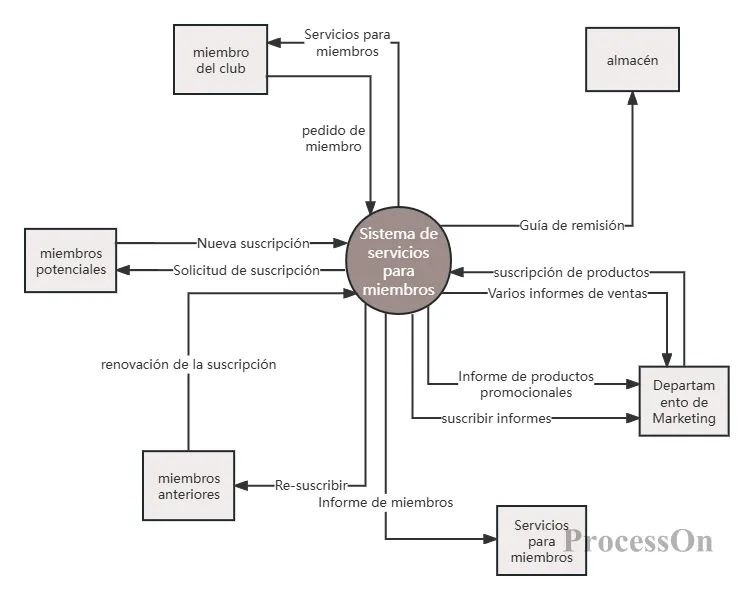

Análisis estructurado / Modelo ambiental
ANÁLISIS ESTRUCTURADO · 01
Modelo ambiental
El modelo ambiental identifica el contexto y las interacciones externas del Sistema de Control de Inventarios y Punto de Venta.
Diagrama de contexto

Entidades externas
| Entidad | Información que proporciona | Información que recibe |
|---|---|---|
| Encargado | Datos de productos, ventas y reposición. | Existencias, totales y alertas. |
| Cliente | Solicitud de compra. | Detalle y total de la venta. |
| Proveedor | Productos y datos de abastecimiento. | Solicitud de reposición (fuera del prototipo). |
| Administrador | Parámetros y mantenimiento de catálogo. | Resumen del inventario. |
Eventos principales
- Consultar un producto o categoría.
- Solicitar una venta y confirmar cantidades.
- Registrar la venta y actualizar existencias.
- Consultar alertas o reponer productos.